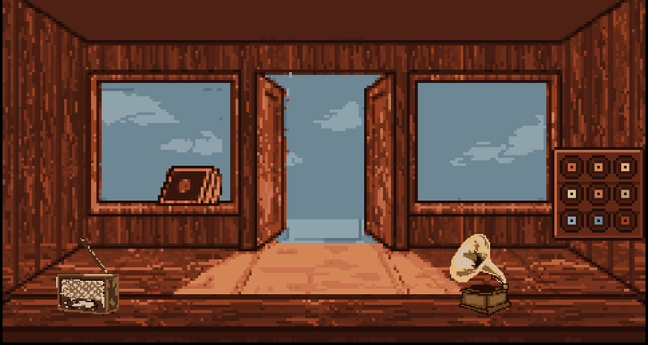
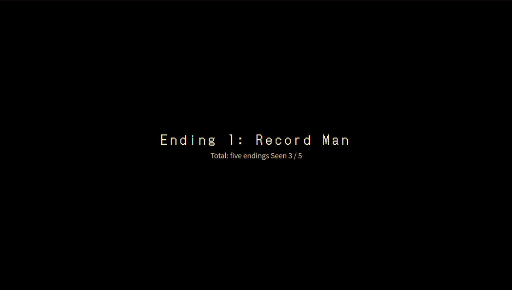

3. Story
A. Characters
GrandpaWants his father's favorite songs
 AuntieLooks after the neighbors
AuntieLooks after the neighbors StudentPursued by the agent
StudentPursued by the agent AgentTrying to arrest the student
AgentTrying to arrest the student- Customers share memories and stories about the song, and players can see the effects of the martial law in their conversations.
- The student represents the social activists at that time, who were suppressed, imprisoned or killed by the authority.
B. Narrative
Day 1An ordinary day
Songs and small talk
Songs and small talk
Day 2Martial rules arrive
Banned songs
Banned songs
Day 3More rules
The agent arrives
The agent arrives
Day 4Ending
The agent knocks
The agent knocks



A newspaper appears every day after the player closes the shop. The headlines reflect the political climate of that stage of martial law.
C. Ending
On the last day, the student asks you to hide him, and everything you did earlier decides which of five endings you reach. After each ending, the music carries into a short history section that connects the story to what really happened.
